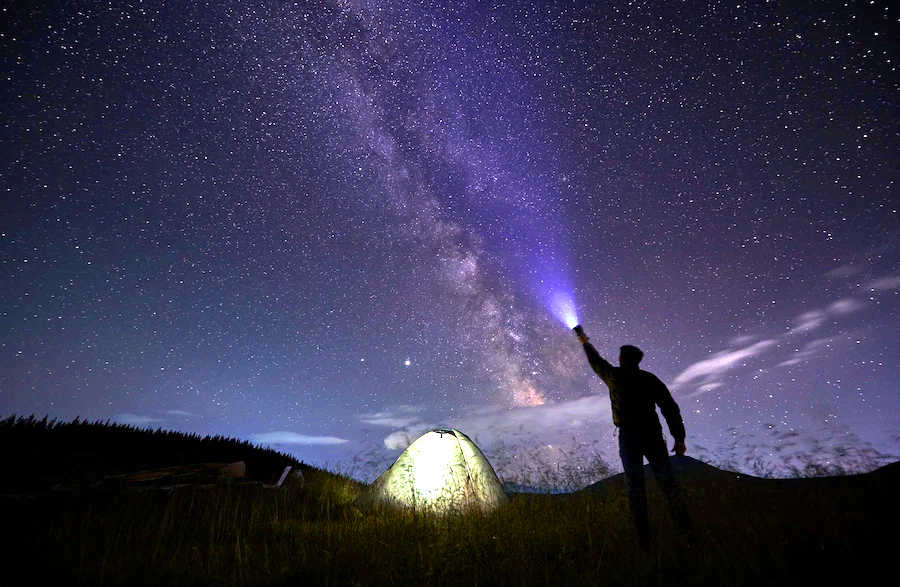
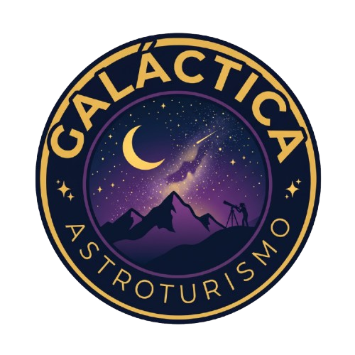
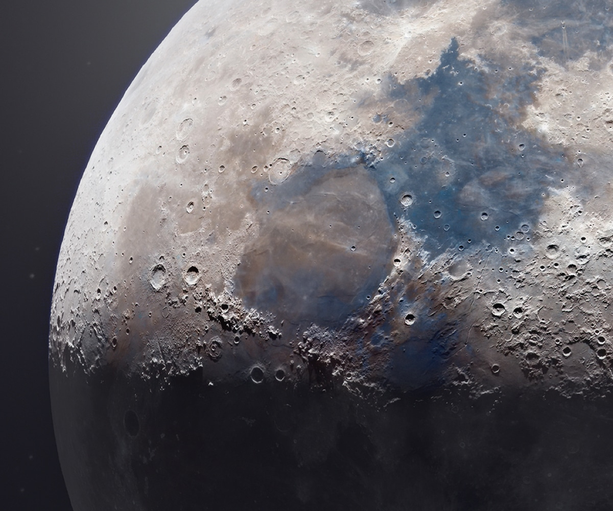
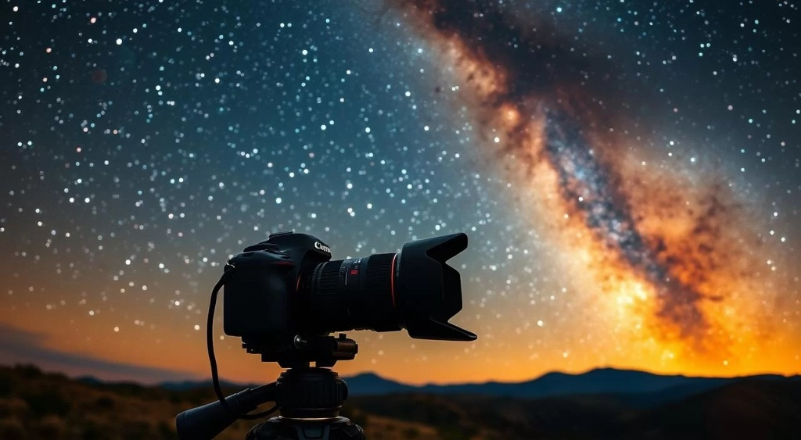

Nivel Fácil · 3h
Ruta Vía Láctea
Caminata guiada por miradores de alta montaña con interpretación de constelaciones y mitología del cielo.

Galáctica AstroTurismoOrganizamos rutas nocturnas de observación astronómica, talleres de astrofotografía y veladas con telescopios profesionales lejos de la contaminación lumínica.
Actividades diseñadas para disfrutar del ocio alternativo bajo las estrellas

Caminata guiada por miradores de alta montaña con interpretación de constelaciones y mitología del cielo.

Observación profunda de la Luna, los anillos de Saturno y las lunas de Júpiter con equipos motorizados.

Aprende a configurar tu cámara o smartphone para capturar lluvias de estrellas y paisajes nocturnos.
Somos un grupo de aficionados a la astronomía y guías de montaña con sede en Avilés (Asturias). Nos encanta enseñar a mirar el cielo nocturno de una forma sencilla, divertida y para todos los públicos.
Salimos en grupo desde Avilés hacia zonas de costa y montaña sin luces de ciudad para poder ver las estrellas, la Luna y los planetas con nuestros telescopios.
"Una experiencia increíble. Nunca había visto los anillos de Saturno tan cerca. Repetiremos seguro."
— Laura M., participante en Ruta Lunar